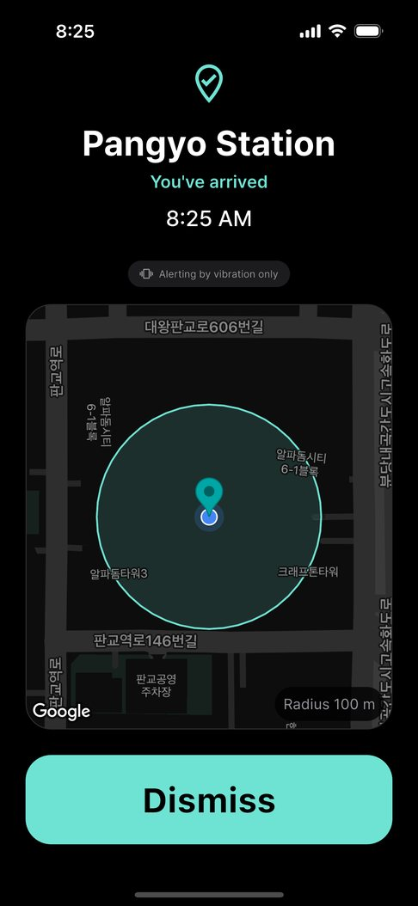

The subway is even easier to fall asleep on than a bus — steady motion, nothing to see outside. There are announcements, but music in your earphones drowns them out.
So does a location alarm work underground? Honestly: it depends on the section of track.
Why location can lag underground
Phones estimate location from GPS, Wi-Fi and cell signals. Deep underground those signals are weaker, so location can update later or be less precise. On above-ground sections and near stations it’s usually fine.
That’s why on the subway the key is a generous radius, not one drawn tightly around the station.
What you can try without an app
- Listen for announcements — keep your music low enough to hear them.
- A time alarm — trains are fairly punctual, so this works better than on buses, but delays throw it off and a ringing phone draws looks.
Setting it up in EarLocAlert
- Pin your station and choose a radius that allows for the distance between stations. Waking a stop early just gives you time to get ready.
- Worried about a deep section? Also save the station before yours. Two alerts are better than none.
- With earphones in, the alert sound plays through them, so you hear it even if you miss the announcement. Without earphones, it only vibrates.

FAQ
Does it not work underground at all?
It does work, but deep underground the phone may find your location later, so the alert can come later. A generous radius or also saving the previous station makes a miss much less likely.
Is my location sent anywhere?
No. Arrival is detected on your phone, and your places and history stay on the device.